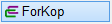

")
")
Kopie einer Auszugsform erstellen. Der Auszug erhält eine neue Position (? Ø ?). Die Positionsnummer wird automatisch hochgezählt.
So wird's gemacht:
§Klicken Sie eine Linie oder einen Text an, der zu dem gewünschten Auszug gehört, oder geben Sie die Nummer des Auszuges ein und bestätigen Sie mit der Eingabetaste. [Welche Form?].
Nach der Auswahl wird der Auszug an den Cursor gehängt. Sie können ihn jetzt noch ausrichten (drehen/spiegeln) oder sofort absetzen.
§Führen Sie einen der folgenden Schritte aus. [Neue Lage].
a)Um die Auszugsform auszurichten, klicken Sie unter der Abfrage auf  .
.
§Geben Sie den Dreh-Winkel ein und bestätigen Sie mit der Eingabetaste. [Dreh-Winkel]. §Geben Sie den Spiegel-Winkel ein oder nutzen Sie die unter der Abfrage stehenden Ausrichtungsoptionen. [Spiegel-Winkel]. |
b)Setzen Sie die Kopie des Auszuges per Mausklick an der gewünschten Stelle ab.
Optionen zum Absetzen im Funktionsbereich
Oraus |
Der neue Auszug kann an beliebiger Stelle platziert werden. |
Oran |
Die Kopie kann orthogonal zum Systemwinkel verschoben werden. Sie können den Orthogonalmodus aktivieren, indem Sie die Umschalttaste (Shift) beim Absetzen gedrückt halten. |
OrLi |
Der Auszug wird orthogonal zur angeklickten Linie verschoben. (Nur verfügbar, wenn ein Verlegungsstab oder eine Teillänge der Auszugsform angeklickt wird). |
Siehe auch: